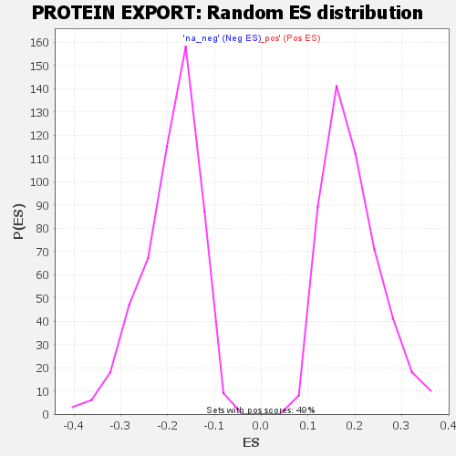

| | | Dataset | GSEA RNK clr Maaslin2 MucosalvsLuminal KO - DistalColon.rnk |
| Phenotype | NoPhenotypeAvailable |
| Upregulated in class | na_pos |
| GeneSet | PROTEIN EXPORT |
| Enrichment Score (ES) | 0.44089118 |
| Normalized Enrichment Score (NES) | 2.2655008 |
| Nominal p-value | 0.0 |
| FDR q-value | 0.0034027868 |
| FWER p-Value | 0.052 |
Table: GSEA Results Summary
 Fig 1: Enrichment plot: PROTEIN EXPORT
Fig 1: Enrichment plot: PROTEIN EXPORT
Profile of the Running ES Score & Positions of GeneSet Members on the Rank Ordered List

Fig 2: PROTEIN EXPORT: Random ES distribution
Gene set null distribution of ES for PROTEIN EXPORT